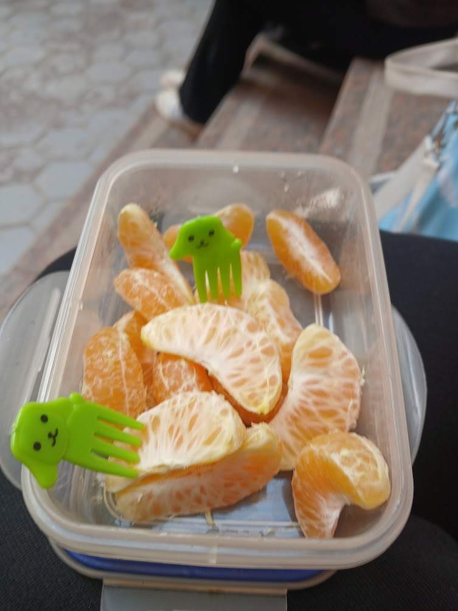
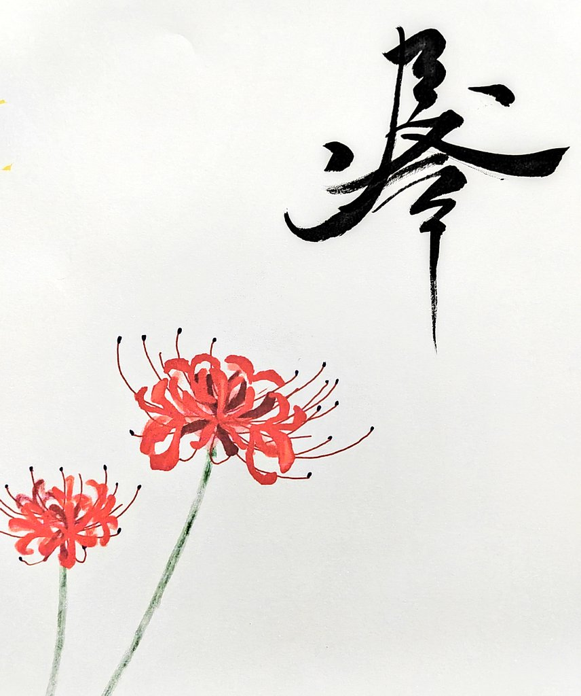
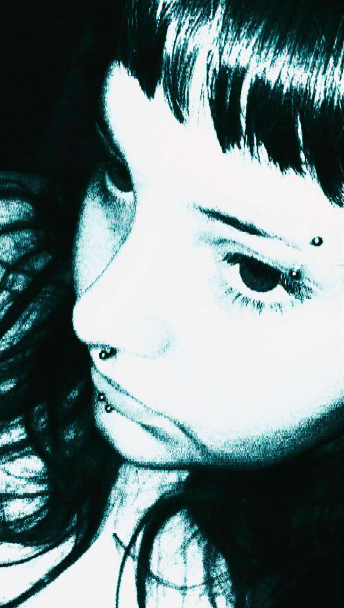

computer science student | full-stack web development
occasional hip hop beatmaker
Computer Science student and Full-Stack Developer passionate about building high-performance, intuitive web applications. I pride myself on being tech-agnostic and quick to adapt, jumping across stacks depending on what the problem requires. My experience ranges from corporate software engineering environments to open-source project maintenance, working fluently with technologies like Angular, React, Astro, Spring Boot, and Node.js. I'm deeply driven by clean software architecture, efficient developer tooling, and modern UI/UX design.
Owned the end-to-end development of the About Us page, from implementation and component architecture to optimization and refinement, translating UI/UX designs into a fully functional, responsive experience. Built modular team grids and an animated team carousel using Astro, React, and TypeScript, with custom event-based communication between components. Contributed to debugging and optimizing the main landing page and documentation portal, fixed navigation issues, and refined UI consistency across the project's web platforms. Collaborated through GitHub issues, pull requests, code reviews, and CI/CD workflows.
Completed a Software Engineering internship within Capgemini Egypt's Cloud & Custom Applications division. Contributed primarily to the Angular frontend of an enterprise conference room reservation system built with Angular 17, PrimeNG, TypeScript, and Java Spring Boot. Developed reusable Angular components, Reactive Forms with validation, TypeScript interfaces, and Angular services. Collaborated in a four-person Agile team using Git feature branches, pull requests, code integration, and regular code reviews.
Completed the Sprints graduation project, developing a secure and modular RESTful Hospital Management System API using Java Spring Boot. Implemented layered backend architecture with Controllers, Services, Repositories, DTOs, and Entity mapping, alongside Spring Security and JWT-based role-based access control. Integrated Spring Data JPA with MySQL, validation, exception handling, API response management, automated tests with JUnit 5 and Mockito, and Docker Compose deployment workflows.
Team-built REST API for a hospital system with multi-role authentication (Admin, Doctor, Patient, Pharmacy), appointments, prescriptions, pharmacy/orders, and messaging; personally designed the DTO layer defining the API's request/response contracts. Built as part of the Banque Misr backend training program.
Designed and built a personal portfolio site to showcase development work and music production, deployed via GitHub Pages.
Contributing frontend work to the project's main gateway site, which serves as the primary distribution point for project updates. I owned the About Us page from start to finish, translating the UI/UX designs into a responsive experience and building modular team grids alongside an animated team carousel. The work used Astro, React, and TypeScript, including custom event-based communication between components. I also helped debug and optimize the main landing page, fixed navigation issues, and refined UI consistency across the site.
Helping maintain the project's official documentation site, which distributes team setup guides and codebase references for contributors across the project. I contributed to debugging and optimizing the documentation portal, while helping keep its navigation and UI consistent with the project's other web platforms.
Contributed substantially to the development, debugging, and refinement of a Qt-based desktop application implementing root-finding, linear-system, and optimization methods. Worked alongside the project owner on implementation improvements and upstream changes as part of a collaborative university project.
Rebuilt a stripped-down version of an internal admin "add rooms" page from the Capgemini internship as a standalone showcase, using standalone components, Angular Router, and Reactive Forms.
Certificate of completion.
Certificate of completion.
Bachelor of Engineering, Computer Science
Curious where the samples came from? Browse the playlists on my YouTube channel.
RHV2 is a heavily sample-driven, mostly lo-fi project inspired by the style of hip-hop I enjoy both listening to and making. It's a sound I've continued to explore ever since.
The album originally started as a heartbreak project called red hairs. I still have some of the early lyrics and beats from that version, but RHV2 evolved into something much more polished with a stronger sense of direction.
Rather than relying on lyrics, I wanted the samples and instrumentals to tell a story that the listener could piece together with enough attention. It isn't an especially meticulous or carefully planned instrumental album, because this version was originally meant to have vocals. I ultimately decided against including them, but I think the music still tells a complete enough story on its own.
Looking back, this was the project where I discovered myself as both a beatmaker and a person, shaping the sound, structure, and creative approach I still use today.

Compared to RHV2, this project is much less emotionally charged. Instead, I wanted to showcase how much I'd improved as a producer while exploring styles I'd never experimented with before.
During its production, I met clockwize, who contributed to one of the tracks and helped shape the project through his suggestions and feedback. I'd link his work, but despite my constant attempts to get him to upload his stuff to YouTube, he just won't. 🤷♂️
Although it isn't as personal as my previous work, I don't think every project has to be an emotional deconstruction of myself. Sometimes you just have to have fun with it! Some of my most polished, grand-sounding beats sit alongside some of my most minimal back-to-the-basics ones, creating a contrast that gives the project a more energetic and cohesive identity despite leaning closer to a beat tape than a traditional album.

The confrontational title was inspired by my actual father. He doesn't really like hip-hop, especially the way I make beats. I figured that if I made something he'd absolutely hate, I'd probably be making something that was true to myself.
This is my favorite and probably best work to date. It feels like the culmination of everything I want my music to be.
This project sits somewhere between RHV2 and pestoهات in terms of emotional relevance. I made it while turning twenty and trying to come to terms with the fact that I was no longer a teenager and that things were starting to get real. You could think of it as one last grasp at the rebellious spirit I always thought I had.
More than anything, this was the project where everything finally came together. I wasn't chasing technical improvement like I was on pestoهات, and I wasn't looking inward as much as I did on RHV2. I already knew the kind of music I wanted to make, so I could focus on bringing that vision to life.
I think this is me at my most experimental. If throwing things at the wall until they stuck was an album, it'd be this. I mixed different genres with hip-hop and experimented with a much wider variety of sounds, samples, and production techniques while still not sounding all over the place—it still sounds like a Pesto album. My personal highlights are the opening two-parter, what's on my mind is on there, and the ending.
This was also the first time I didn't just dump the entire project into a single video. Instead, I uploaded each track separately, which I think is a much better way to present my work going forward.
Oh yeah, and clockwize is here again. Collaborating with me might be the only way to get his work onto the internet.
